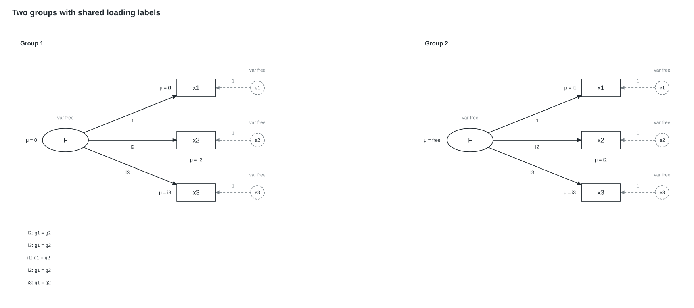

Phase 1 output from the application layout engine, using lavaan parameter tables. No per-fixture node coordinates are supplied. Open the SVG or PNG at its original size to inspect details.

Vector SVG · PNG preview
Lavaan syntax
F =~ c(1,1)*x1 + c(l2,l2)*x2 + c(l3,l3)*x3
x1 ~ c(i1,i1)*1
x2 ~ c(i2,i2)*1
x3 ~ c(i3,i3)*1
F ~ c(0,NA)*1